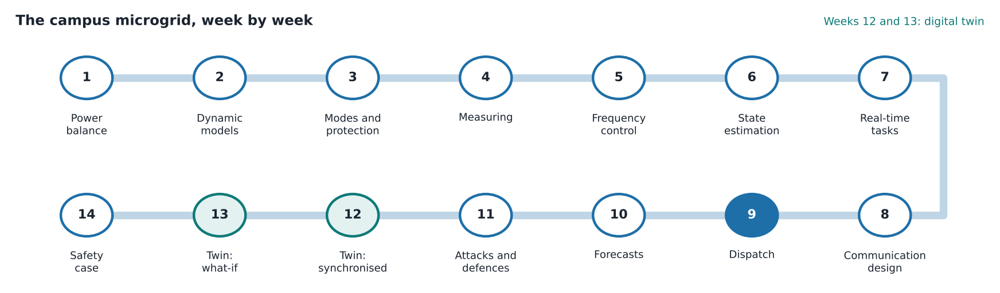
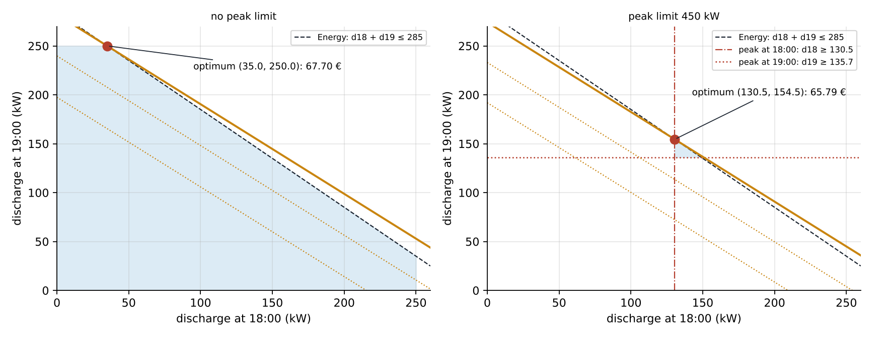
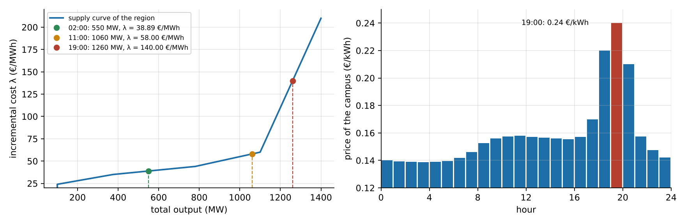
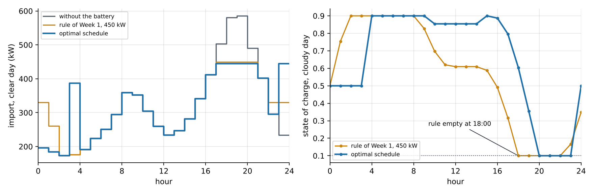
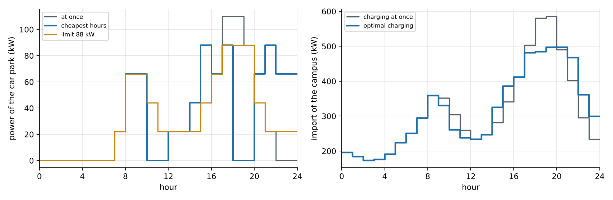
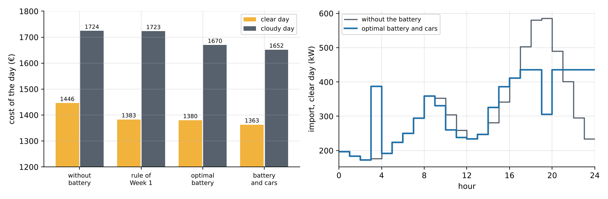

Overview
Weeks 1 to 8 made the campus measure, estimate, control and communicate. The remaining question is what it should do: When the battery should charge and when the cars should take their energy. This week writes such decisions as optimisation problems [1]. It finds the price of each hour by the economic dispatch of the regional grid [2]. It then schedules the battery and the car park of the campus at the lowest cost.
flowchart LR A["Optimisation problems"] --> B["Economic dispatch"] B --> C["Battery scheduling"] C --> D["Demand response"] D --> S["The campus microgrid, stage 9"] S --> FT["In the field: Amperes"] FT --> H["Learning to dispatch"]
Every method on this page is also written as Python code in the Colab notebook of the week. Its code is divided into numbered sections. Each orange box on this page names the section whose code carries out what the text above the box explains. The box says what to run and what to look at in that section, and its button opens the Colab notebook at that place. The virtual laboratories, the practice parts and the self-assessment of the week are in the interactive lab. Each blue box opens one part of the interactive lab. The part ends with a link back to its box on this page, and the Colab notebook is always opened from the orange boxes here.
Python step 9: Optimisation with SciPy
Python code in the Colab notebook, right after Section 0 (setup). Open the Colab notebook and run this step cell by cell: It consists of short pieces of Python code with their explanations, a quick check and three exercises. Topics: An objective function and its minimum · A linear program with linprog · Variables for every hour.
The step introduces the optimisation tools of SciPy [3]. It minimises a function of one variable, solves a linear program in two variables with linprog and plans a battery over a few hours with arrays. Students who have never programmed start with the start-here notebook of the course.
Weeks 1 to 8 built the balance, the dynamics, the modes, the measurements, the frequency control, the estimators, the real-time tasks and the networks of the campus. The battery still follows the simple rule of Week 1, and every car charges as soon as it arrives.
This week replaces both with plans of the lowest cost for each day.

Optimisation: Variables, objective and constraints
An optimisation problem chooses the decision variables \(x\) that minimise an objective \(f(x)\) while all constraints hold [1]. When the objective and all constraints are linear, the problem is a linear program (LP):
The constraints cut out a feasible region with flat faces, and the optimum of a linear objective lies at a corner of it. The simplex method walks from corner to corner, and modern solvers such as HiGHS solve LPs with thousands of variables in a fraction of a second [4].
The battery of the campus gives a first example with two variables, its discharge \(d_{18}\) and \(d_{19}\) at 18:00 and 19:00, when the price is 0.22 and 0.24 €/kWh. With \(E\) kWh stored above its minimum, it can deliver \(E\eta\). A peak limit \(G\) forces it to cover the import above \(G\):
→ These formulas with numbers, step by step: Lab Part B, calculator, steps 3 and 4.
A worked example. With \(E = 300\) kWh, the battery delivers \(300 \times 0.95 = 285\) kWh. Without a peak limit, the optimum gives the dearer hour 19:00 the full 250 kW and 18:00 the remaining 35 kW. It saves \(0.24 \times 250 \)\({}+ 0.22 \times 35 \)\({}= 67.70\) €. A limit of 450 kW forces at least 130.5 and 135.7 kW, so the optimum moves to \(d_{18} = 130.5\) and \(d_{19} = 154.5\) kW and saves 65.79 €. With only 150 kWh stored, no plan meets all constraints.
Animation. The two evening hours as a linear program. The shaded region holds every plan that meets the limits of the inverter, the energy stored and the peak limit. The orange lines join plans of equal saving, and the red dot is the optimum. Lower the energy or the peak limit and watch the optimum move from corner to corner until no plan is left.

Check your understanding. Where does a linear program take its optimum?
Python code in the Colab notebook, Section 1. Open Section 1 of the Colab notebook and run it. The function two_hours writes the two evening hours as a linear program and solves it with linprog. The code prints four cases, one of them infeasible, and draws the feasible region with the optimum.
- The campus could minimise its cost, its emissions or its peak import. Which objective would you choose, and how would you combine two of them?
- Which constraint of the battery would you never relax, even for a large saving?
Economic dispatch
The regional grid serves its demand \(D\) with three units, a cheap base unit, a middle unit and an expensive peak unit. Each has the cost \(C_i(P_i) = b_i P_i + c_i P_i^2\) in € per hour and limits on its output \(P_i\) in megawatts (MW). The economic dispatch minimises the total cost [2]:
At the optimum, every unit within its limits runs at the same incremental cost \(\lambda\). A unit with a lower incremental cost would otherwise take over a megawatt more cheaply. A unit at a limit keeps its output, and \(\lambda\) is the cost of one more MWh, the price of energy in that hour. The campus pays \(p_t = 0.10 + \lambda_t/1000\) € per kWh, the energy and a fixed network charge.
| Unit | Cost (€/h, P in MW) | Incremental cost (€/MWh) | Limits (MW) |
|---|---|---|---|
| Base unit | 20 P + 0.02 P² | 20 + 0.04 P | 100 to 600 |
| Middle unit | 35 P + 0.025 P² | 35 + 0.05 P | 0 to 500 |
| Peak unit | 60 P + 0.25 P² | 60 + 0.5 P | 0 to 300 |
→ These formulas with numbers, step by step: Lab Part B, calculator, steps 1 and 2.
A worked example. At 02:00 the region needs 550 MW, and only the base and the middle unit run. Their outputs \(P_i = (\lambda - b_i)/(2c_i)\) add up to the demand. With \(b_1/(2c_1) = 500\), \(b_2/(2c_2) = 700\), \(1/(2c_1) = 25\) and \(1/(2c_2) = 20\), the incremental cost is \(\lambda = (550 + 500 + 700)/45 = 38.89\) €/MWh. The base unit gives 472.2 MW and the middle unit 77.8 MW, and the campus pays 0.1389 €/kWh. At 19:00 the region needs 1260 MW. The first two units run at their limits, and the peak unit gives 160 MW at \(\lambda = 60 + 0.5 \times 160 = 140\) €/MWh. The campus then pays 0.24 €/kWh.
Scene: Equal incremental cost. The three units of the regional grid as ramps: Each ramp rises with the incremental cost of its unit against its output and ends at the limits of the unit. The translucent plane is the level λ. Each unit runs where its ramp meets the plane, and the bars on the table show the outputs. The five buttons follow a night, a noon, an evening and the price of the whole day.

Check your understanding. Why does the price jump in the evening although the demand grows only a little?
Python code in the Colab notebook, Section 2. Open Section 2 of the Colab notebook and run it. The function dispatch searches \(\lambda\) by bisection and returns the outputs of the three units. The code prints three hours, computes the price of all 24 hours as PRICE and draws the supply curve and the price.
- Which hours would you choose for washing the towels of the sports hall, and why?
- What happens to the evening price when a large solar plant joins the region?
Battery scheduling
The battery of the campus can plan a whole day as one linear program [5]. For every hour \(t\) it chooses the charging \(c_t\), the discharging \(d_t\), the import \(g_t\), the export \(x_t\) and the stored energy \(e_t\). The tariff adds a peak charge of \(K = 0.30\) € per kW of the highest import of the day:
Here \(n_t\) is the import without the battery, \(s = 0.05\) €/kWh the price of an export and \(G\) the peak of the day, itself a variable. The limits keep \(50 \le e_t \le 450\) kWh, \(c_t, d_t \le 250\) kW and \(g_t \le 600\) kW. The day ends with at least the 250 kWh of the start. These are 121 variables, solved in a few milliseconds.
A worked example. On the clear day, the campus pays 1446.09 € without the battery, with a peak of 585.7 kW. The optimal schedule charges at the cheapest night hours and discharges from 17:00 to 20:00. It cuts the peak to 444.7 kW, and the day costs 1379.91 €. The rule of Week 1 with its threshold of 450 kW ends the day with less energy in the battery. Priced at 0.15 € per missing kWh, its corrected cost is 1382.98 €, close to the optimum.
On the cloudy day the solar plant delivers less, and the same rule spends the battery from 08:00 on. The battery runs empty in the hour from 17:00, just before the evening peak of 608.3 kW at 18:00. The rule saves only 1.16 €, while the optimum saves 54.34 € and keeps the peak at 489.9 kW. A threshold of 490 kW would suit this day, but a fixed rule cannot know it in advance.

Check your understanding. Why does the rule of Week 1 fail on the cloudy day?
Interactive lab, Part A. The battery container in 3D: The racks of the battery, the inverter, the transformer with the grid meter and the tariff board of the campus. Run the clear and the cloudy day without the battery, with the rule of Week 1, with a rule of prices and with the optimal schedule. The results can be copied into the Colab notebook.
Interactive lab, Part B. The calculator of the week computes the formulas of this page step by step. It covers the dispatch of a night, the price, the two evening hours and the charging of one car in its cheapest hours.
Python code in the Colab notebook, Section 3. Open Section 3 of the Colab notebook and run it. The function schedule builds the linear program of this section with 121 variables and solves it. run_rule runs the rules of Week 1 and of prices. Paste the results of Part A into MY_RUNS, and the code runs each of your days again.
- The optimal schedule assumes that the import of the whole day is known at midnight. What happens when the afternoon turns cloudy?
- Why is the energy left in the battery at midnight worth money?
Demand response
Demand response changes when a load runs, instead of when the supply runs [6]. The ten cars of the car park are such loads. Car \(k\) arrives at \(a_k\), leaves at \(d_k\) and needs \(E_k\) kWh, with at most 22 kW per hour:
Charging at once fills each car from its arrival and adds 110 kW to the import at 17:00 and 18:00, the dear hours. Charging in the cheapest hours of each car moves its energy into cheaper hours, and the linear program of the battery can include the cars as further variables. A limit of power for the whole car park serves the car that leaves first, the rule of earliest deadline first of Week 7.
A worked example. Car J arrives at 17:00, leaves at midnight and needs 110 kWh, five hours at 22 kW. At once it charges from 17:00 to 21:00 and pays \(22 \times 0.9975 = 21.95\) €. In its five cheapest hours it pays \(22 \times 0.8272 = 18.20\) €. For the whole car park, the campus pays 1408.90 € instead of 1446.09 €. The optimal charging pays 1404.78 € and lowers the peak from 585.7 to 497.7 kW. A limit of 88 kW is the smallest that still fills every car before it leaves.

Check your understanding. Why does a limit of 88 kW barely lower the cost of the campus?
Interactive lab, Part C. The car park in 3D: Ten chargers with their cars, the load controller with its screen and a board with the cars. Run charging at once, in the cheapest hours, under a limit and optimally, and find the smallest limit that fills every car in time. The results can be copied into the Colab notebook.
Python code in the Colab notebook, Section 4. Open Section 4 of the Colab notebook and run it. The functions ev_immediate, ev_cheapest and ev_limited carry out the strategies of this section, and schedule with the cars optimises the charging. Paste the results of Part C into MY_CARS, and the code runs each of your strategies again.
- How would you ask the drivers for their departure time, and what if they are wrong?
- Should a car that leaves early pay more for its energy than one that stays overnight?
Development templates of the week
The folder templates/ of the repository collects small working programs that carry out the methods of the course. Week 9 adds two of them, each with a description, its inputs and outputs and an example run.
| Template | What it does |
|---|---|
economic_dispatch.py | The economic dispatch of units with quadratic costs and limits by bisection on the incremental cost, with the price of each hour; the example is the regional grid of the campus |
battery_schedule_lp.py | The daily schedule of a battery and of flexible loads as a linear program with SciPy, with a peak charge; the example is the clear day of the campus |
The engineering side: Plans that survive the day
An optimal plan is only as good as its forecasts. The schedule of this week knows the whole day in advance, while a real controller learns the import hour by hour. Model predictive control therefore solves the problem again every hour with the latest forecast and applies only the first hour of the plan [5].
| Check | What it reveals |
|---|---|
| The plan of the morning against the actual day | The value lost to errors of the forecast |
| Constraints that are active at the optimum | Where more capacity or flexibility would pay |
| The state of charge at the end of the horizon | Whether the plan borrows from the next day |
| The solver status and its time | An infeasible problem or a model that grows too large |
| The plan against a simple rule | A safe fallback when the optimiser fails |
The dual values of an LP tell how much one more unit of a resource would save. In the dispatch, the dual value of the balance is \(\lambda\) itself. In the schedule of the battery, the dual value of its upper limit tells what one more kWh of storage would be worth on that day.
A driver who knows that petrol is cheaper on Monday fills the tank on Monday and drives with less on Sunday. The tank is the store, the week is the horizon, and the driver keeps a reserve for a surprise. A battery schedule makes the same decisions every hour.
- What should the controller do when
linprogreports that the problem is infeasible at 03:00? - How often would you solve the schedule again during the day, and why?
The campus microgrid, stage 9: The dispatch of the microgrid
Stage 9 plans the day of the campus at the lowest cost. The price follows the regional dispatch, the battery follows the optimal schedule and the car park shifts its charging, on a clear and on a cloudy day.
| Question | Result | Model |
|---|---|---|
| Price of the campus | 0.1388 to 0.24 €/kWh, highest at 19:00 | Economic dispatch |
| Clear day without the battery | 1446.09 €, peak 585.7 kW | Balance and tariff |
| Clear day, rule of Week 1 | 1382.98 €, corrected for the energy at midnight | Rule |
| Clear day, optimal battery | 1379.91 €, peak 444.7 kW | Linear program |
| Clear day, optimal battery and cars | 1363.18 €, peak 435.7 kW, 5.73 percent saved | Linear program |
| Cloudy day: rule, optimum, optimum with cars | 1723.09, 1669.91 and 1651.55 € | Rule and linear program |
| Smallest limit of the car park | 88 kW | Earliest departure first |
The optimum adds little to a well-tuned rule on the day for which the rule was tuned, but much on the day for which it was not. Week 10 forecasts the load and the generation that these plans need.

Check your understanding. What does the campus gain from the optimal schedule on a cloudy day compared with the rule of Week 1?
Interactive lab, Part D. Stage 9 by hand: The incremental cost for a demand of 700 MW and the saving of the two evening hours with 250 kWh stored. It ends with the cost of charging one car in its cheapest hours.
Python code in the Colab notebook, Section 5. Open Section 5 of the Colab notebook and run it. The code collects the results of stage 9 in the dictionary STAGE9. A figure compares the strategies on both days and draws the optimal import of the clear day.
In the field: The limit in amperes
On site, the limit of the car park goes into the load controller in its cabinet. The controller and the chargers work in amperes per phase, because each charger tells its car the current through the control pilot. The International Electrotechnical Commission (IEC) defines this signal in IEC 61851-1 [7]. It cannot announce less than 6 A, so a car charges with at least 6 A or not at all. The controller passes its limits to the chargers as charging profiles of the Open Charge Point Protocol (OCPP), in amperes or in watts [8]:
\(U\) is the voltage of a phase, 230 V. For example, a limit of 66 kW gives \(66000/(3 \times 230) = 95.65\) A, so the controller takes 95 A, 65.6 kW, while 96 A would give 66.2 kW. A second number matters when the controller fails: Each charger then falls back to its fail-safe current, and all chargers together must still stay within the limit.
Interactive lab, Part E. The field task: The load controller of the car park. Enter the limit of stage 9 in amperes, set the fail-safe current and run both tests.
Your application
Wherever energy can be stored or a demand can wait, the same linear program finds the cheapest plan. The Colab notebook holds an application switch with six systems. They are a home battery, a water tower, a cold store, the heating of a school, a bus depot and the cooling of a data centre.
Python code in the Colab notebook, Section 6. Open Section 6 of the Colab notebook, set APP to one of the six names in the comment and run the cell. The code plans the purchases of the store against the prices of the campus and compares them with buying as needed.
Learning to dispatch
A linear program needs a model and a forecast. Reinforcement learning instead learns a policy for the battery or for flexible loads from experience, by trying actions and observing their cost. A review by Vázquez-Canteli and Nagy found that most such studies of demand response handle a single agent in a stationary environment [9].
For the campus, a learned policy could react to clouds and to late cars faster than an optimiser that solves the problem again. It has no guarantee, however, that it respects the limits of the battery and of the contract. A safe design keeps the constraints of this week as a shield around the learned policy.
Suppose that the campus records a year of its import, its prices and the actions of the optimiser. A neural network learns to imitate the optimiser from the hour, the price, the state of charge and the forecast. It answers in microseconds, and a check of the constraints corrects every action that would leave the limits.
- Which part of the planning would you hand to a learned policy first, and which never?
- How would you compare a learned policy with the optimum on days that it has not seen?
Review cards
Select a card to turn it over.
References
[1] Boyd, S., & Vandenberghe, L. (2004). Convex Optimization. Cambridge University Press. https://doi.org/10.1017/CBO9780511804441
[2] Wood, A. J., Wollenberg, B. F., & Sheblé, G. B. (2014). Power Generation, Operation, and Control (3rd ed.). Wiley.
[3] Virtanen, P., Gommers, R., Oliphant, T. E., Haberland, M., Reddy, T., Cournapeau, D., Burovski, E., Peterson, P., Weckesser, W., Bright, J., van der Walt, S. J., Brett, M., Wilson, J., Millman, K. J., Mayorov, N., Nelson, A. R. J., Jones, E., Kern, R., Larson, E., Carey, C. J., Polat, İ., Feng, Y., Moore, E. W., VanderPlas, J., Laxalde, D., Perktold, J., Cimrman, R., Henriksen, I., Quintero, E. A., Harris, C. R., Archibald, A. M., Ribeiro, A. H., Pedregosa, F., van Mulbregt, P., & SciPy 1.0 Contributors. (2020). SciPy 1.0: Fundamental algorithms for scientific computing in Python. Nature Methods, 17(3), 261-272. https://doi.org/10.1038/s41592-019-0686-2
[4] Huangfu, Q., & Hall, J. A. J. (2018). Parallelizing the dual revised simplex method. Mathematical Programming Computation, 10(1), 119-142. https://doi.org/10.1007/s12532-017-0130-5
[5] Parisio, A., Rikos, E., & Glielmo, L. (2014). A model predictive control approach to microgrid operation optimization. IEEE Transactions on Control Systems Technology, 22(5), 1813-1827. https://doi.org/10.1109/TCST.2013.2295737
[6] Palensky, P., & Dietrich, D. (2011). Demand side management: Demand response, intelligent energy systems, and smart loads. IEEE Transactions on Industrial Informatics, 7(3), 381-388. https://doi.org/10.1109/TII.2011.2158841
[7] International Electrotechnical Commission. (2017). Electric vehicle conductive charging system - Part 1: General requirements (IEC 61851-1:2017, Edition 3.0). IEC.
[8] Open Charge Alliance. (2020). Open Charge Point Protocol 2.0.1. Open Charge Alliance. https://openchargealliance.org/protocols/open-charge-point-protocol/
[9] Vázquez-Canteli, J. R., & Nagy, Z. (2019). Reinforcement learning for demand response: A review of algorithms and modeling techniques. Applied Energy, 235, 1072-1089. https://doi.org/10.1016/j.apenergy.2018.11.002